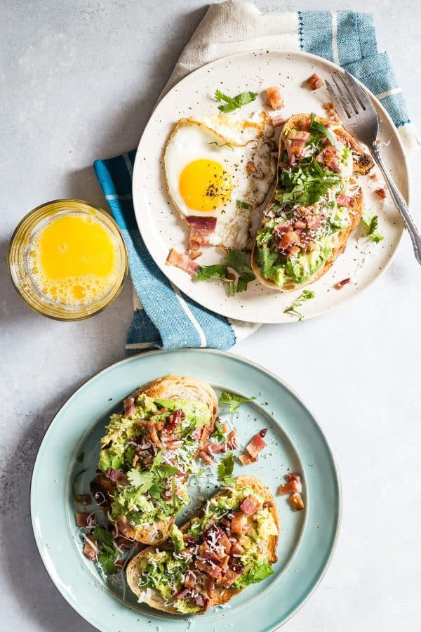

Description
A modern classic with some extra attitude.
Ingredients
- 1 slice of preferred bread
- 1 large avocados
- 2 slices of bacon
- 1 large egg
- (Optional): Momofuku Chili Crunch
Steps
- Toast bread to desired preference.
- Slice and chop avocado.
- Cook and scramble eggs. Chop it once it's done.
- Cook bacon. Chop or slice (whichever you prefer).
- Layer the avocado, eggs, and bacon on top of the toast.
- Optional: Add Momofuku Chili Crunch on top of it all.
- Enjoy!